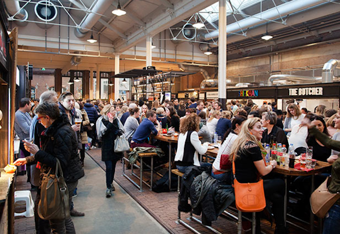
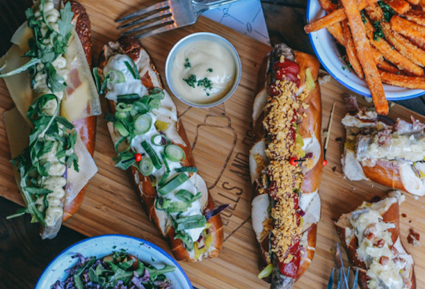

Guide to Amsterdam
Food
Foodhallen
Foodhallen in an indoor food market with a variety of gourmet food vendors. It’s broad selection means that there is something for everyone! The food can be pricey, but everything I have had there has been delicious. It is also in a cool building that used to be a tram station. I highly recommend you pay it a visit!
The best way to get there besides car is by bike or tram.


Bulls & Dogs
Bulls & Dogs serves hot dogs in pretzel buns and insane milkshakes that are yummy and beautiful. It can be busy at times but i’d say it’s worth the wait! I recommend you go to the Bulls & Dogs on Van Woutstraat. There’s a mini Bulls & Dogs in Foodhallen but they only serve hot dogs, no milkshakes. The Van Woutstraat location offers their full menu!


Pancakes Amsterdam
Pancakes Amsterdam is a good spot for breakfast/brunch/lunch. I recommend you get their Dutch pancakes (which are similar to crepes) - they offer an array of toppings and the option to craft your own pancake creation. I had the brie, pine nut, pesto pancake and it was incredible. They also offer gluten and lactose free pancakes!
There are a few Pancakes Amsterdam locations across the city.